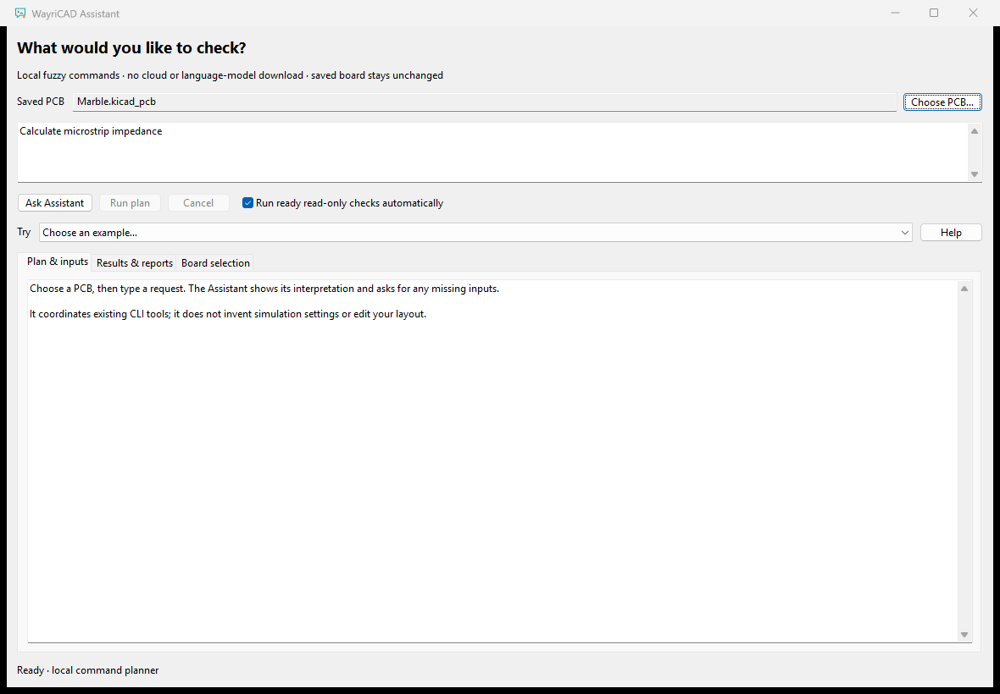
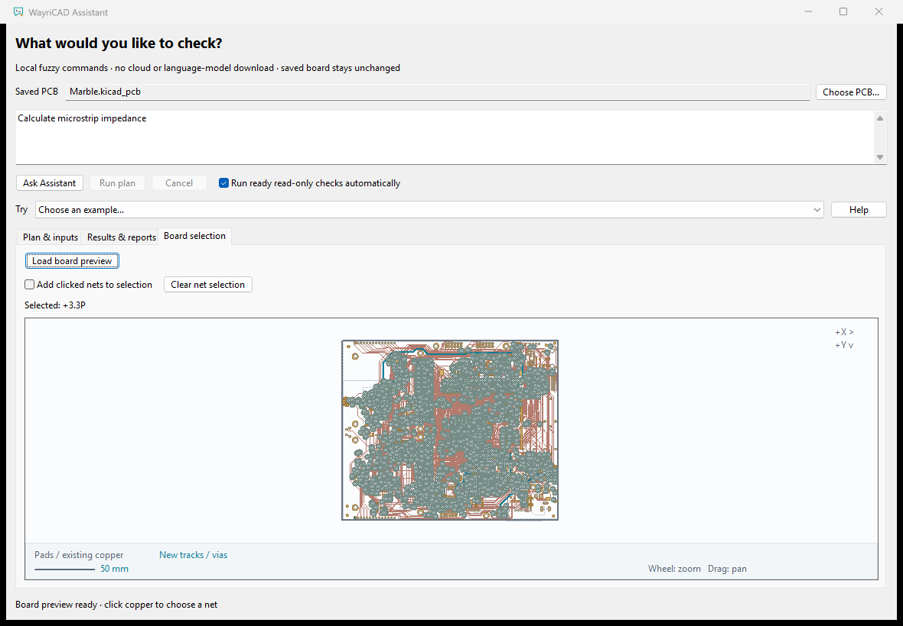
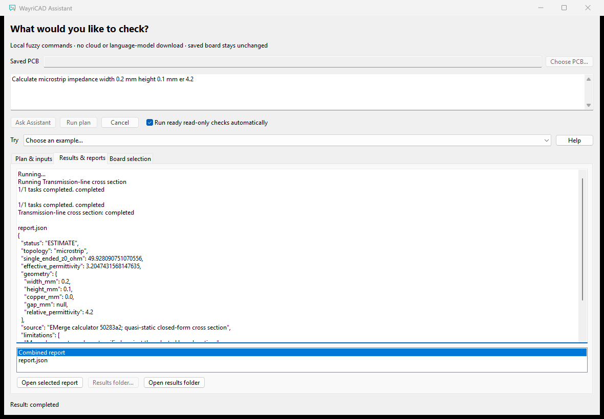

Use ordinary language to run supported WayriCAD checks. Matching is local and fuzzy, with a bounded catalogue of actions. This is not a general chatbot, a cloud service or a downloaded language model.

Results persist under Documents/WayriCAD/Assistant/results. Each run has its own folder and its plan, run record and artifacts remain after you close the window. Use Results folder… to choose a different destination for future runs and Open results folder to open the current run in your file manager. Boolean input fields offer true and false; those words are accepted by the planner.
Open Board selection and click Load board preview. This optional step avoids loading and drawing the full PCB during startup. Click a pad, via or trace to select its net. Only selected nets receive the accent highlight. Use Add clicked nets to selection for multiple targets and Clear net selection to start again. Wheel to zoom, drag to pan and double-click to fit.
A selected net supplies context for a request that does not explicitly name a net. Selection changes invalidate the previous plan; ask again before running. The preview caches the saved board. Unsaved editor changes are not included; save, then choose the PCB again to refresh it.

Actual native screenshots: Windows, KiCad 10.0.6, public Marble saved PCB, source unchanged. This is a simplified copper/pad/outline selector. The first screenshot shows a request before execution. No private data or path redaction.
The planner asks for required nets, units and numerical inputs instead of inventing simulation settings. An ambiguous match is offered for user selection. Unsupported requests are reported without trying an unrelated command. Returned values retain the original tool’s limitations, material assumptions and boundary conditions.
Run python -m suite_assistant_plugin capabilities to see the exact action catalogue in your installed version. The planner can coordinate only explicitly registered adapters. Other plugins remain available through their own windows and CLIs.
| Issue | Action |
|---|---|
| Unknown or ambiguous request | Choose an interpretation or describe one specific check. |
| Unknown net or missing parameter | Select a net in the board preview or fill in the requested input. |
| Missing dependency or plugin | Follow the tool’s runtime setup instructions, then retry. |
| Run taking too long | Click Cancel. The Assistant requests worker cancellation; no board edits are applied. |
| Report cannot open | Check the result text and whether the generated file still exists in its original output folder. |
The saved design is read-only. Outputs go into a separate results folder. Opening or closing the Assistant does not alter component placement, copper, zones or annotations. Closing requests cancellation and discards queued window callbacks. The execution broker remains alive long enough to stop its worker and record the cancelled run before the process exits. The command engine constructs argument arrays for registered tools; user text is not executed as a shell command.
Generated reports may contain board names, references and nets from the selected design. Review them before sharing. Dependencies for the invoked tool may need a one-time runtime setup; the fuzzy planner itself needs no network access.

This run called the existing RLC CLI with width 0.2 mm, height 0.1 mm and relative permittivity 4.2. The result is a zero-thickness quasi-static estimate of 49.928 Ω. Its assumptions and limitations remain in the structured report. No mock result is shown.
python -m suite_assistant_plugin capabilities python -m suite_assistant_plugin plan "Calculate microstrip impedance width 0.2 mm height 0.1 mm er 4.2" --output C:/Projects/Example/microstrip-plan.json python -m suite_assistant_plugin run C:/Projects/Example/microstrip-plan.json --output-root C:/Projects/Example/assistant-results python -m suite_assistant_plugin run --help python suite_assistant_plugin/desktop_entrypoint.py --board C:/Projects/Example/board.kicad_pcb
The plan command saves a reviewable JSON plan; run executes that unchanged plan into a separate output folder. The microstrip example needs no board. For board checks, pass --board C:/Projects/Example/board.kicad_pcb to plan.
Use KiCad 10’s native Python for GUI and geometry actions. The GUI and CLI share the same planning and execution engine.